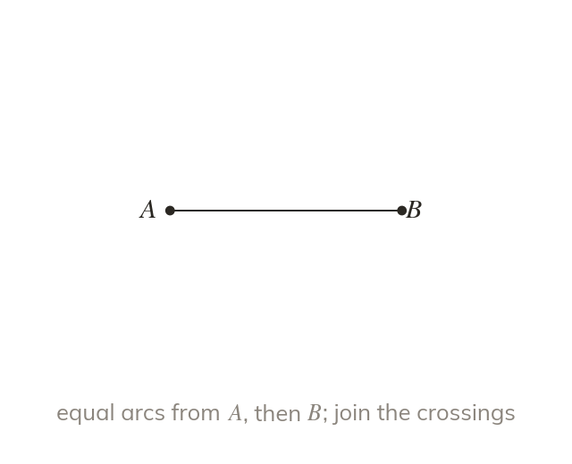
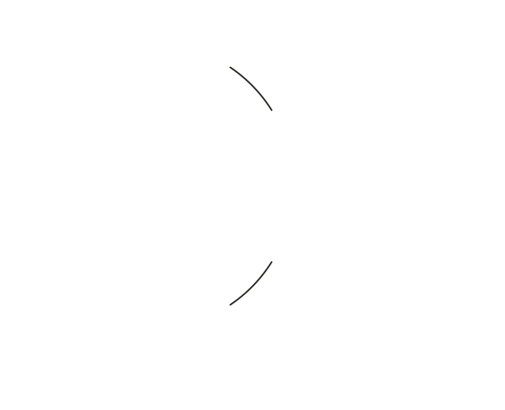
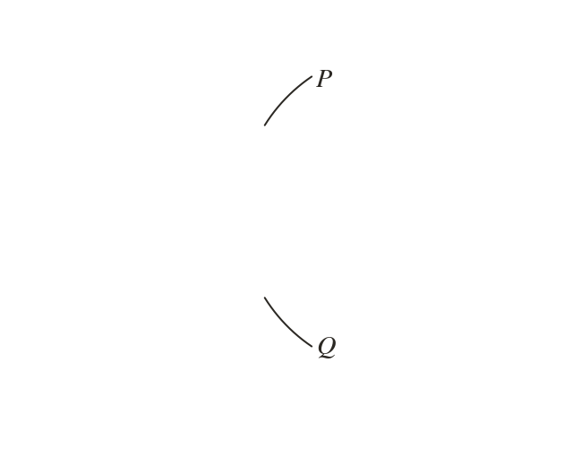
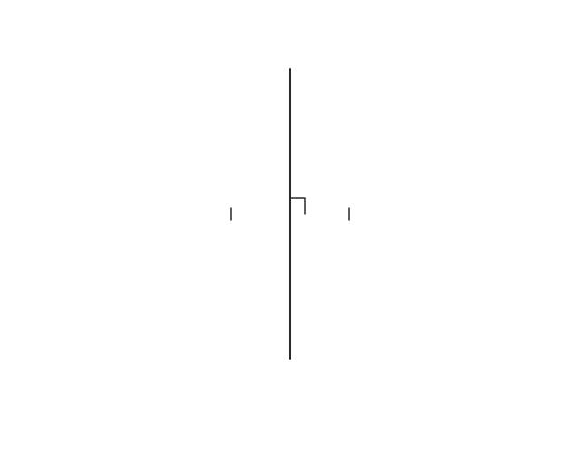
Equal arcs from both ends
Equal arcs from and cross at points equally far from both. The line through those crossings is the perpendicular bisector.
A phone mast placed fairly between two towns, or a path equally far from two walls, can be found exactly. Compasses and a straight edge do it with no measuring.
Work down the page at your own pace. Write every answer in your book first, then click to check it.
Read each card, then follow the worked examples one step at a time.




Equal arcs from and cross at points equally far from both. The line through those crossings is the perpendicular bisector.
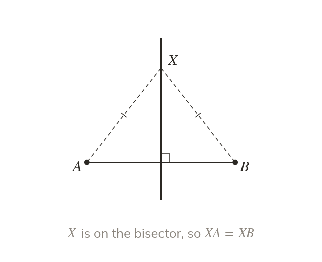
Every point on the perpendicular bisector is as far from A as from . So it is the locus of points equidistant from and .
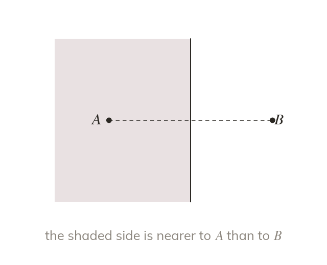
Points on A's side of the bisector are nearer to A than to . The bisector is the boundary between the two regions.
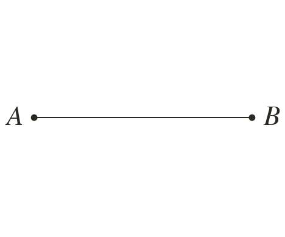
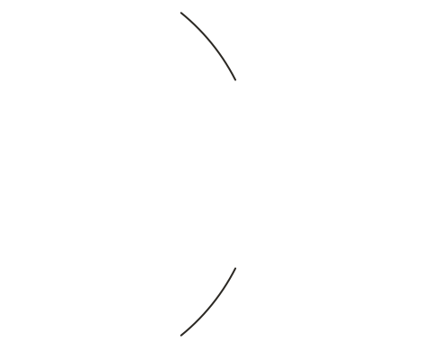
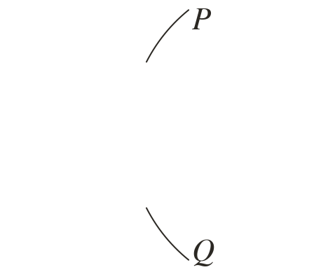
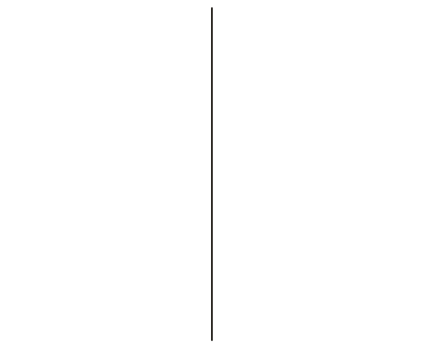
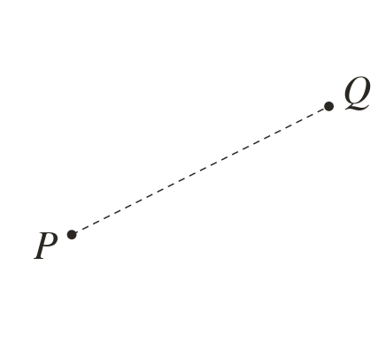
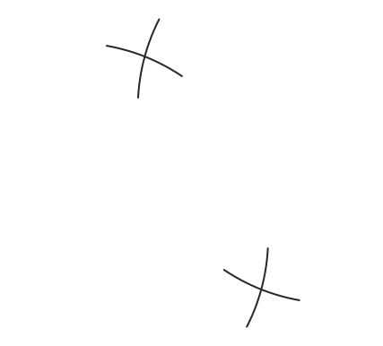
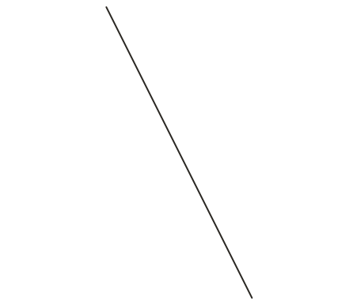
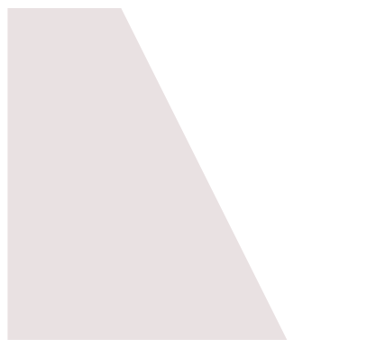
Pick an answer. If it's wrong, the feedback tells you which mistake it was.
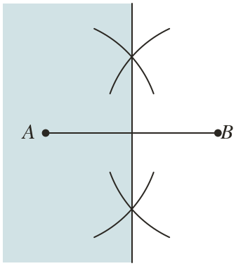
Write the blanks in your book first, then tap each one to check.
Printable worksheet — the questions with room to work.
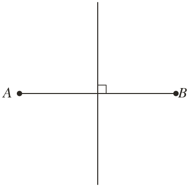
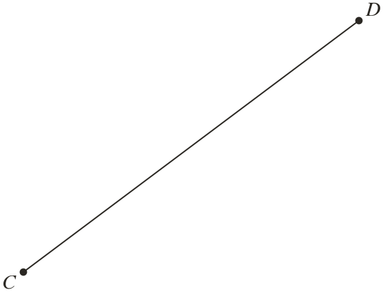
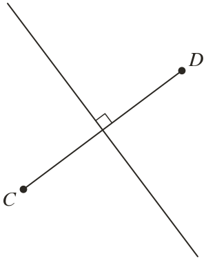
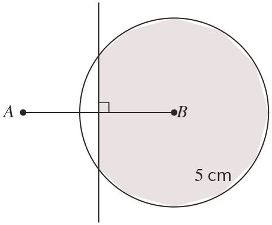
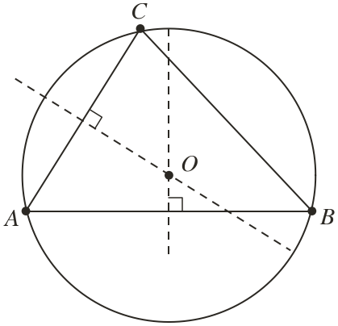
Read each card, then follow the worked examples one step at a time.
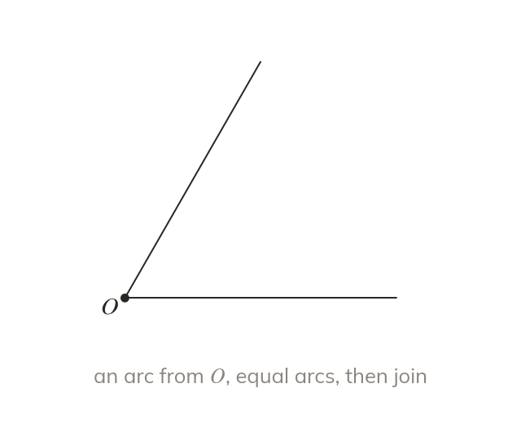
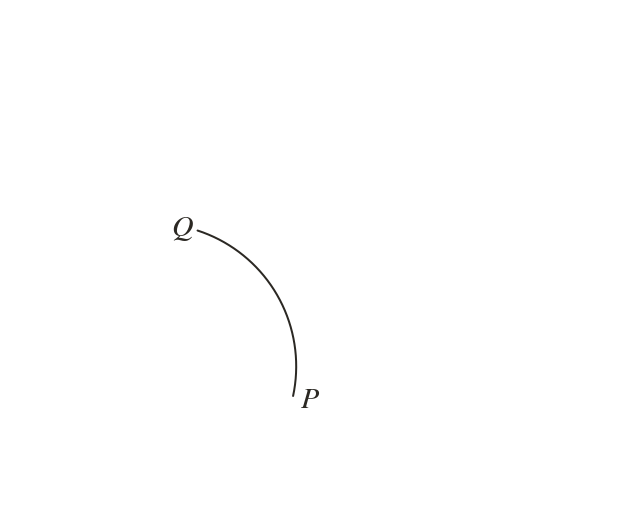
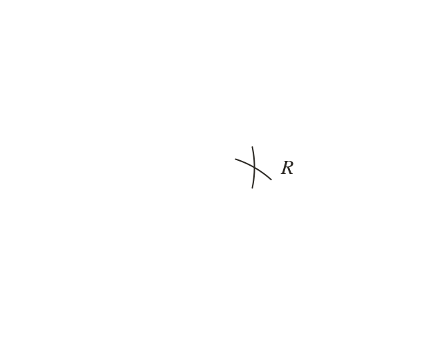
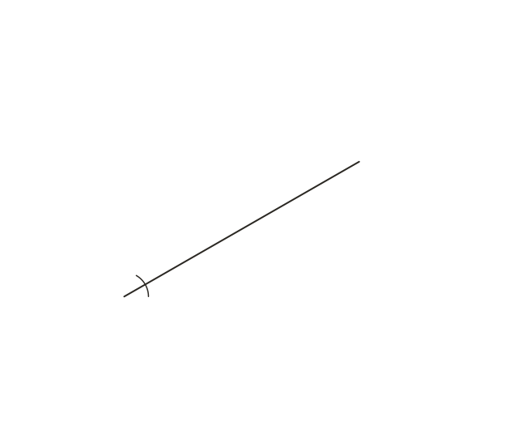
An arc from the vertex marks two points equally far from it. Equal arcs from those points meet on the line that halves the angle.

Every point on the angle bisector is as far from one arm as the other. Distance to a line is measured at right angles.
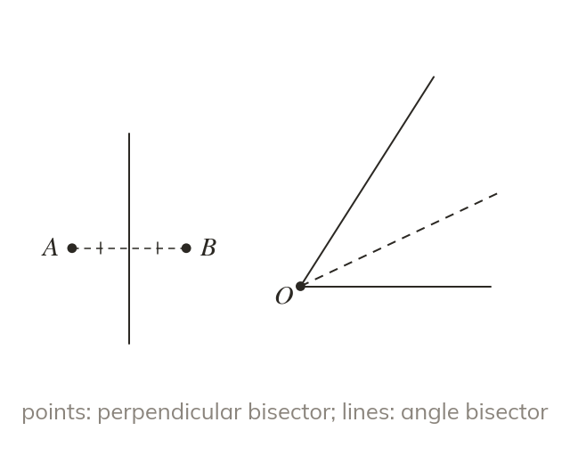
Equally far from two points needs a perpendicular bisector. Equally far from two lines needs an angle bisector.
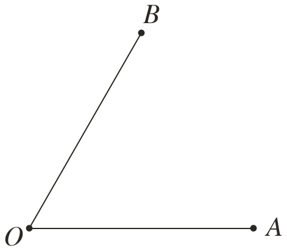
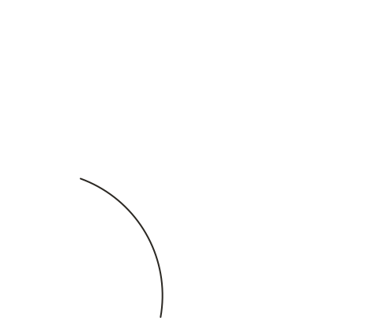
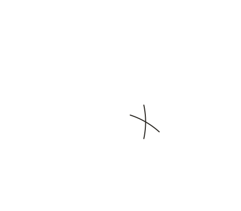
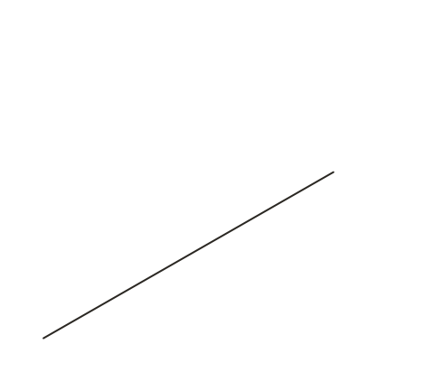
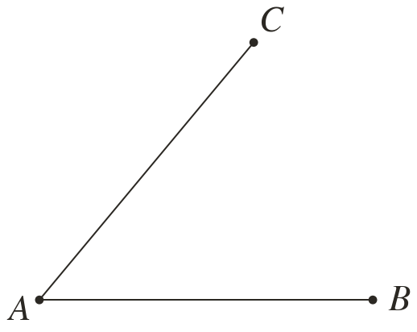
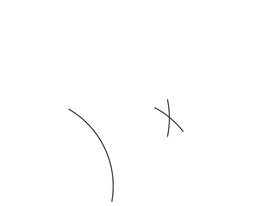
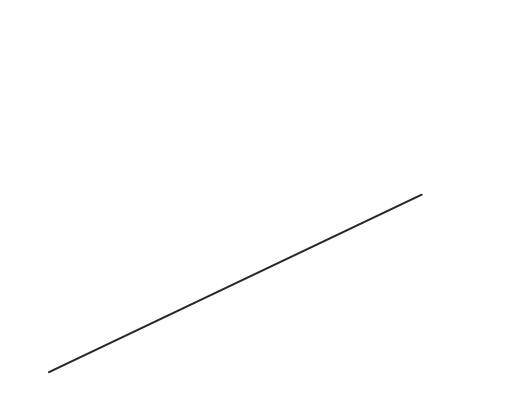
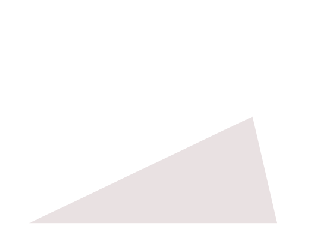
Pick an answer. If it's wrong, the feedback tells you which mistake it was.
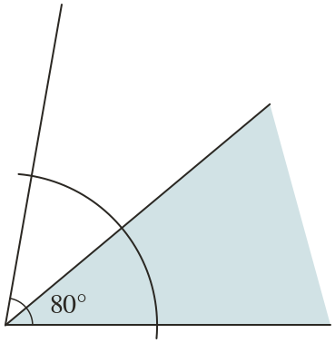
Write the blanks in your book first, then tap each one to check.
Printable worksheet — the questions with room to work.
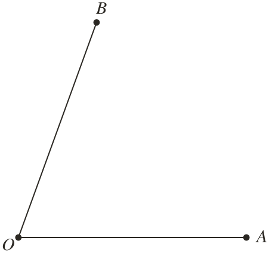
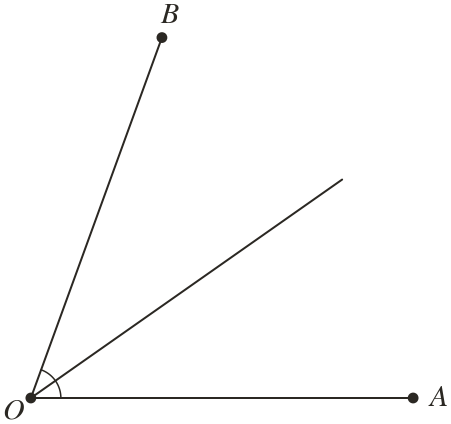
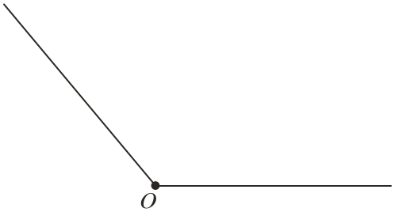
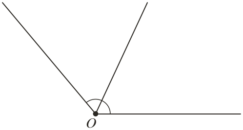
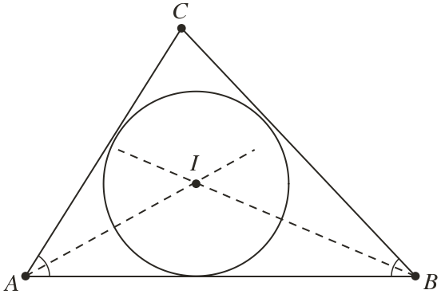
Finished? Next lesson: 10H.14.2 Radii, Semicircles and the Angle at the Centre.
For each skill, tap the one that is true for you today. Your Revise pages start with anything you mark Not yet.
Your ratings are saved on this device only.
Log in, then search for a code to practise that skill.
Videos, worksheets and more on each part of this lesson.